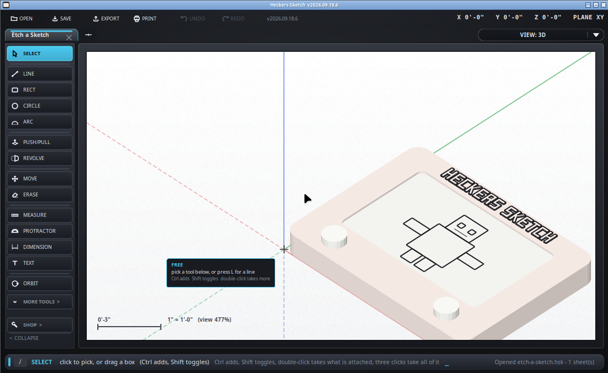

Looking straight down, and cutting through.
/plan, or I to
toggle between plan and isometric.
PLAN is the view that prints like a drawing: no perspective, no foreshortening, and a scale that means something. Drawing is easier here too - what you click is where it lands, with no plane to think about.
A plan is a slice, not a view from above. Set a cut height and only what lies inside it is drawn - so a wall shows as two lines and the roof over it does not.
/cut 0 9' - sets the bottom and the top of the slice./cut all - opens it right up to the whole model./cut off - turns the slice off.Anything below the slice is drawn faintly and dashed, the way a drawing shows a beam over a door or a footing under a wall. Anything above it is not drawn at all.
PLAN is the view to print from, and to export SVG from - see printing.

The two numbers in the CUT boxes are the bottom and the top of the slice, and they are always on screen. When something is being left out the bar says so - "1,584 things outside it" - so a drawing that has gone quiet is never a mystery.
The bottom of the slice is also the height you draw at, which is what a floor plan means: set the bottom to 9'-0" and you are drawing on the second storey, seeing the second storey, with everything below out of the way.
Snapping obeys the slice as well. What is hidden cannot be snapped to - otherwise the cursor pulls onto things you cannot see, which is worse than no slice at all.